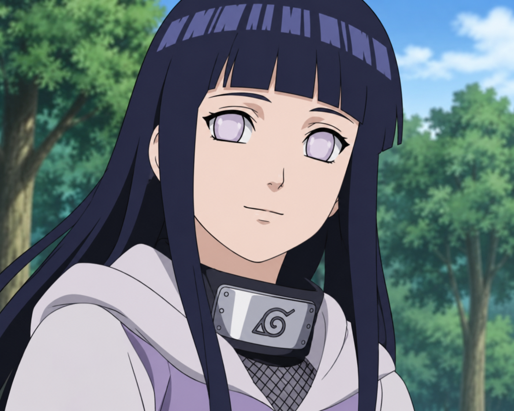
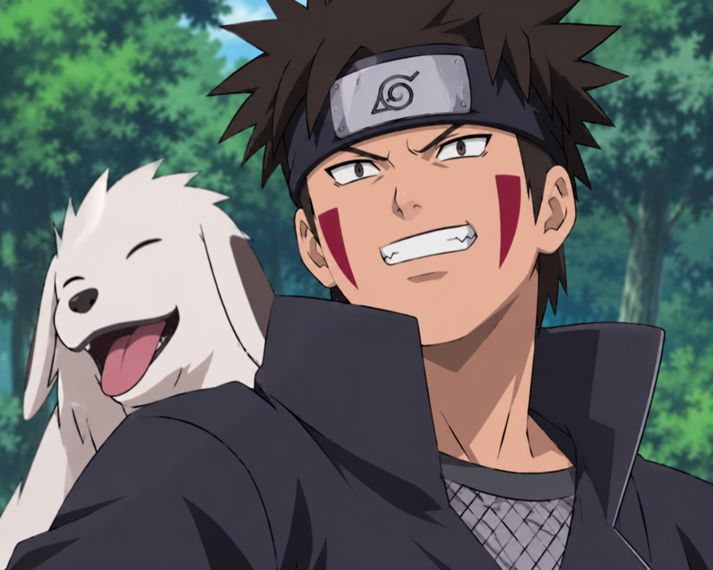
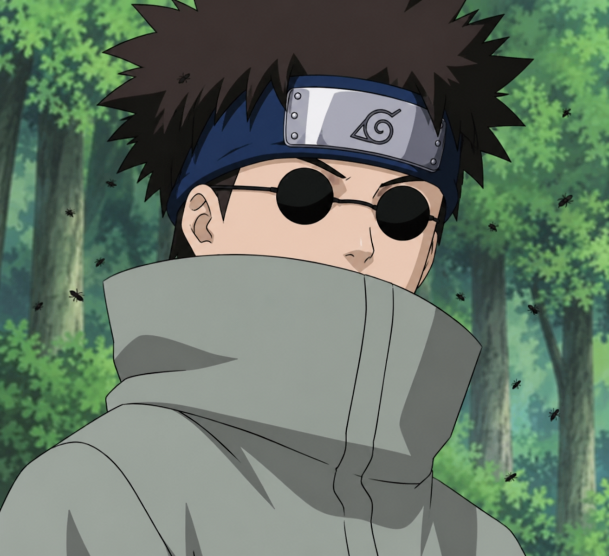

L'Équipe 8, dirigée par Kurenaï Yûhi, est spécialisée dans la traque et la reconnaissance, composée de Hinata Hyûga, Shino Aburame et Kiba Inuzuka avec son chien Akamaru.
Kurenaï est la jōnin instructrice qui s'occupe de Hinata Hyūga, Shino Aburame et Kiba Inuzuka.
L'enfance de Hinata a été relativement difficile. En tant qu'héritière du clan, elle devait beaucoup s'entraîner, tâche qu'elle accomplissait avec son père. À l'âge de trois ans, elle vit son clan poser sur Neji le sceau maudit de « L'Oiseau en Cage », chose qui fut marquante pour elle puisqu'elle se considère responsable de ce fait.

Kiba est issu du clan Inuzuka de Konoha. Il a une grande sœur, Hana, qui est une vétérinaire et partage avec lui certaines caractéristiques physiques et physiologiques. Leur mère, Tsume, est une jōnin du village, et semble assez sévère et effrayante, ce qui a provoqué selon Kiba, le départ de leur père.

Shino est un homme très réservé, froid, assez mystérieux et très susceptible. Son apparence est énigmatique ; en effet, son visage est dissimulé autant que possible.
